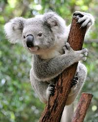

Zebra

Zebra: ssak z rodziny koniowatych charakteryzujący się obecnością białych pasów na czarnej sierści. Zwierzęta te należą do rodzaju koń.
Koala
Koala: Koala to torbacz pochodzący z Australii, znany ze swojego spokojnego trybu życia i charakterystycznego wyglądu przypominającego misia.
Tygrys

Tygrys: Groźny zwierz z rodziny kotowatych ziomków